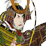
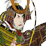

Requires
- Buildings:

- Arts:

- Resources:

Enables
- Units:

 



Spawned Garrisons
- Units:

Basic Building Statistics (can be modified by difficulty level, arts, skills, traits and retainers)
- Cost: 5950
- -1 to recruitment time of koryu units
Description
The unexpected act is always devastating.
A legendary koryu dojo allows the training of onna-bushi, but this also requires a provincial headquarters in the same province. The weapon masters here also give naginata-armed units a very impressive experience bonus when they are recruited. Saito Musashibo Benkei was an almost-mythical sohei, or warrior monk, of the Gempei War period who served Minamoto no Yoshitsune with some distinction. Although his life and acts have been much embellished over the years by legend, Benkei does seem to have been an exceptionally strong man. He is also credited as a cunning fighter, and is supposed to have collected 999 swords from his defeated opponents, a number that looks suspiciously convenient when telling a good yarn! He is also credited with defending the bridge during the Battle of Koromo River, giving Minamoto no Yoshitsune enough time to commit suicide with dignity. Benkei's death was suitably heroic: the enemy were too scared to approach the huge monk, and then realised that he wasn't moving. He had died standing up, keeping the enemy at bay even in death.